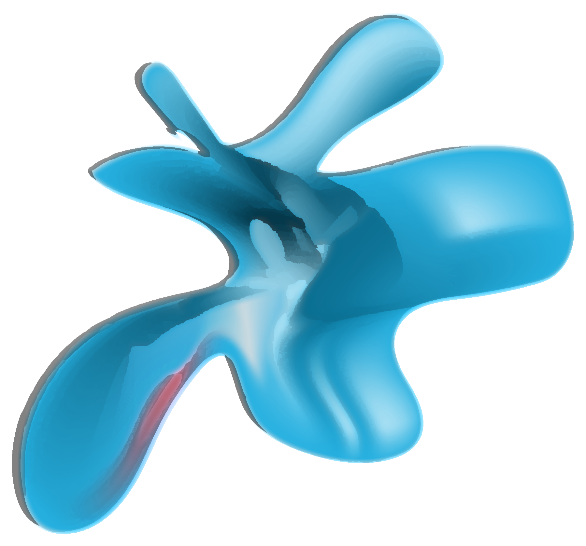
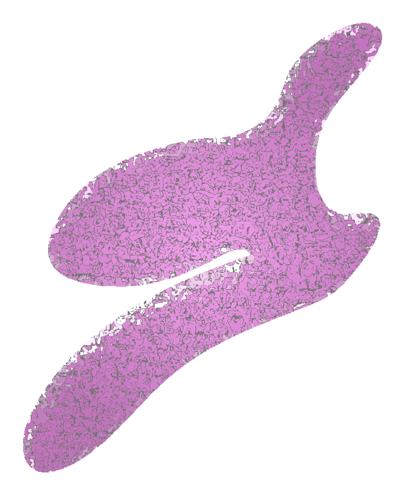

There are many areas to include in self-care, and you discover the best ones for you along your journey. Here are 5 that have been found to be a great starting point.

Emotional
Emotional self-care is responding to feelings and emotions in a healthy way, a way that feels good for you.
>> journal, listen to music or read, take photographs, affirmations, listen to your intiution
Download the Self-Care GuidebookSpiritual
Spiritual self-care is taking care of your heart and soul by engaging in activities that make you “feel good”, or give you that warm-fuzzy feeling inside.
>> meditation, gratitue, take yourself on a date, write, yoga, go for a walk, drink tea, sit in silence, listen to relaxing music
Download the Self-Care GuidebookPhysical
Physical self-care is taking care of your body and staying healthy.
>> workout, meal plan and prepare, sleep, body scanning, drink plenty of water
Download the Self-Care GuidebookSocial
Social self-care is working on relationships and human connections. It is all about learning to re-charge while being social, instead of being drained by social interactions.
>> volunteer, write a letter, reach out to an old friend, game/hang nights, find a walking partner, join a group/activity
Download the Self-Care Guidebook
